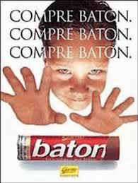

|
Maria foi casada com homem da roça
Morava numa palhoça
Era a prenda do lugar
Lá deixou tudo veio morar na cidade
Sua maior felicidade é fazer o tchá, tchá, tchá
Maria tchá, tchá, tchá, tchá, tchá, tchá
Maria tchá, tchá, tchá, tchá, tchá, tchá
Maria tchá, tchá, tchá, tchá, tchá, tchá
Sua maior felicidade é fazer o tchá, tchá, tchá
Teve um namorado de bastante idade
Não teve felicidade em matéria de nhá nhá
Todas as noites o velhinho se babava
Quando Maria anunciava vou fazer um tchá, tchá, tchá
Maria tchá, tchá, tchá, tchá, tchá, tchá
Maria tchá, tchá, tchá, tchá, tchá, tchá
Maria tchá, tchá, tchá, tchá, tchá, tchá
Quando Maria anunciava vou fazer um tchá, tchá, tchá
Quando vem pro baile vem de mini saia
Bota tomara que caia
Vem pronta vem pra abafar
A rapaziada vem chegando e perguntando
Se não viu aí vagando a Maria tchá, tchá, tchá
Maria tchá, tchá, tchá, tchá, tchá, tchá
Maria tchá, tchá, tchá, tchá, tchá, tchá
Maria tchá, tchá, tchá, tchá, tchá, tchá
Se não viu aí vagando a Maria tchá, tchá, tchá
Maria foi um dia a Horizontina
Veio um time da Argentina
Tinha futebol por lá
O juiz teve que atrasar a partida
A pedido da torcida Maria fez tchá, tchá, tchá
Maria tchá, tchá, tchá, tchá, tchá, tchá
Maria tchá, tchá, tchá, tchá, tchá, tchá
Maria tchá, tchá, tchá, tchá, tchá, tchá
A pedido da torcida Maria fez tchá, tchá, tchá
Não existe mulher feia nessa terra
Todas são santas ou feras depende do respeitar
Se eu não fosse casado já a longa data
Traria pra Consolata a Maria tchá, tchá, tchá
Maria tchá, tchá, tchá, tchá, tchá, tchá
Maria tchá, tchá, tchá, tchá, tchá, tchá
Maria tchá, tchá, tchá, tchá, tchá, tchá
Traria pra Consolata a Maria tchá, tchá, tchá
Sou italiano minha mãe é espanhola
Não carrego na sacola nada pra me incomodar
Tu tá curioso tá ansioso eu te conheço
Tá querendo o endereço da Maria tchá, tchá, tchá
Maria tchá, tchá, tchá, tchá, tchá, tchá
Maria tchá, tchá, tchá, tchá, tchá, tchá
Maria tchá, tchá, tchá, tchá, tchá, tchá
Tá querendo o endereço da Maria tchá, tchá, tchá |


 |